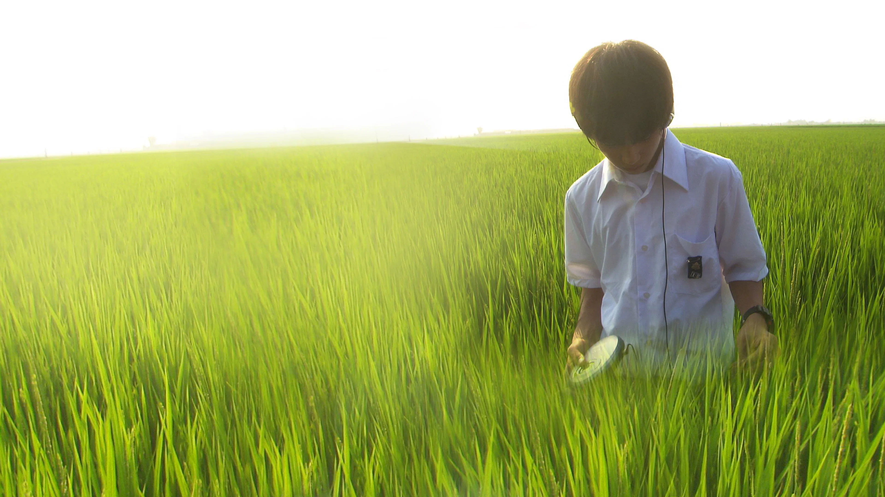

サブカル、アングラ系の邦画が好きで好きになった映画は短期間で何回も繰り返し観たりします。
邦画の中でも中々好きな"リリィシュシュのすべて"について紹介していきます。
この映画を観たのは高校生の頃で度々映る田舎風景、青春の痛みや苦しさに惹かれました。
私自身青春時代というものにコンプレックスがあったりするので、青春！甘酸っぱい！キラキラ！といった感じの映画よりも
鬱展開の胸糞映画のほうが自分に合っていて好きです。
ざっくりとしたあらすじは、主人公が自分のやるせない気持ちを"リリィシュシュ"というアーティストの曲によって救われる話だと解釈しています。